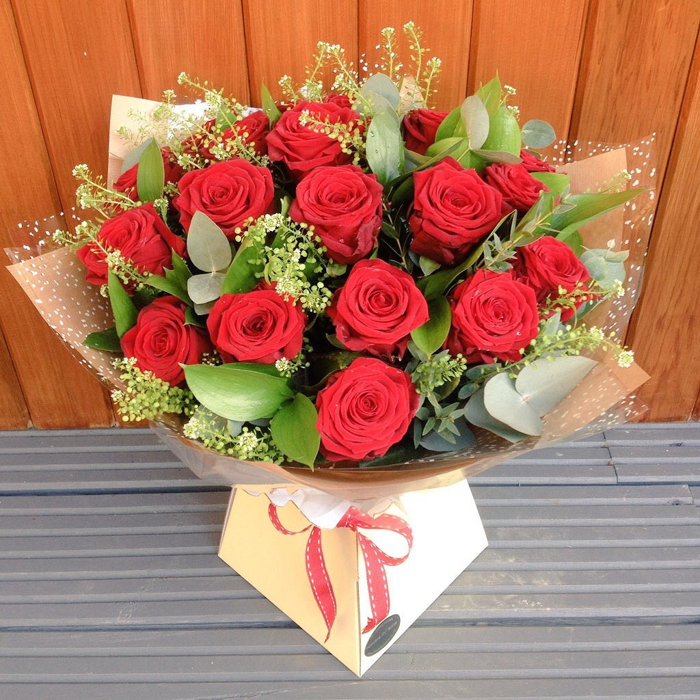
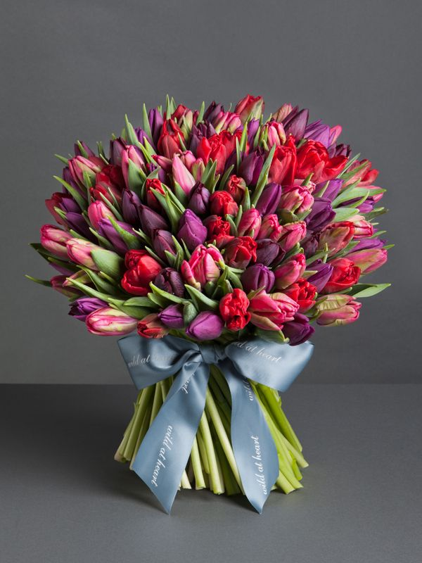
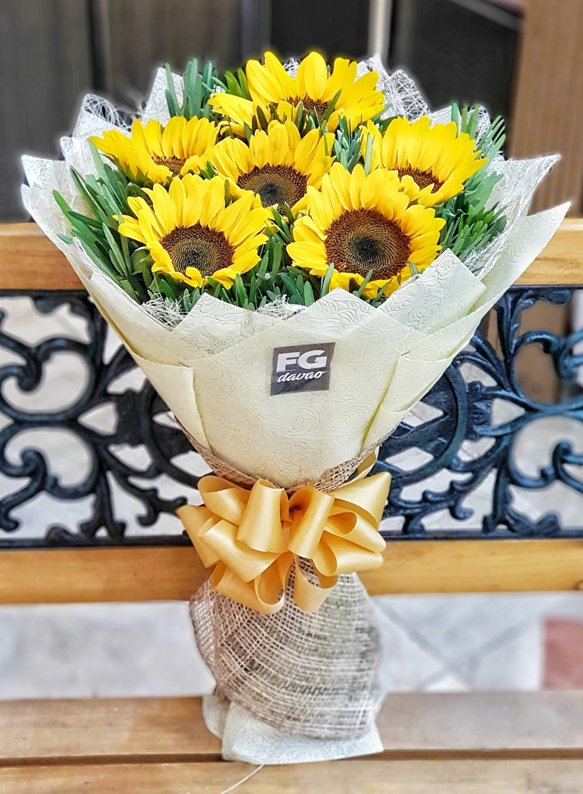

Romantic Rose Bouquet
PRICE = ₱1000
"Say 'I love you' with the timeless beauty of our romantic rose bouquet. Featuring a mix of classic red roses, soft pinks, and delicate whites, this elegant arrangement captures the essence of love. Perfect for Valentine's Day, it’s a beautiful expression of affection that will make hearts skip a beat."

Sweetheart’s Bliss
PRICE = ₱2000
"Indulge your special someone with a bouquet that speaks volumes. Our Sweetheart’s Bliss bouquet combines lush red roses with tender pink tulips, accented with fragrant baby’s breath for a touch of whimsy. This romantic arrangement is perfect for expressing your love on Valentine’s Day or any day you want to make them feel extra cherished."

Valentine’s Day Romance
PRICE = ₱3000
"Celebrate the magic of love with our Valentine’s Day Romance bouquet. Overflowing with rich red roses, soft pink lilies, and a hint of greenery, this stunning arrangement is a symbol of deep affection and passion. Delivered fresh and full of meaning, it’s the perfect way to surprise your partner and make this Valentine’s Day unforgettable."